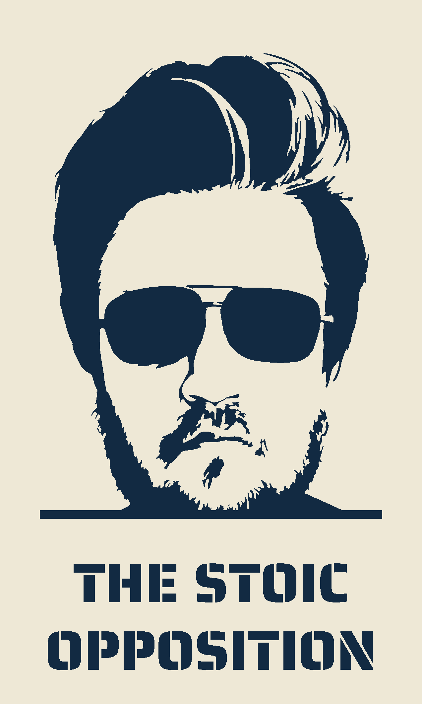
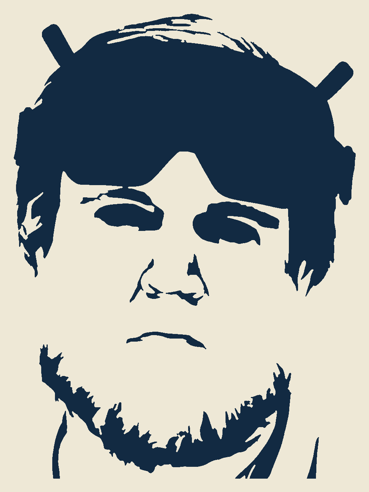
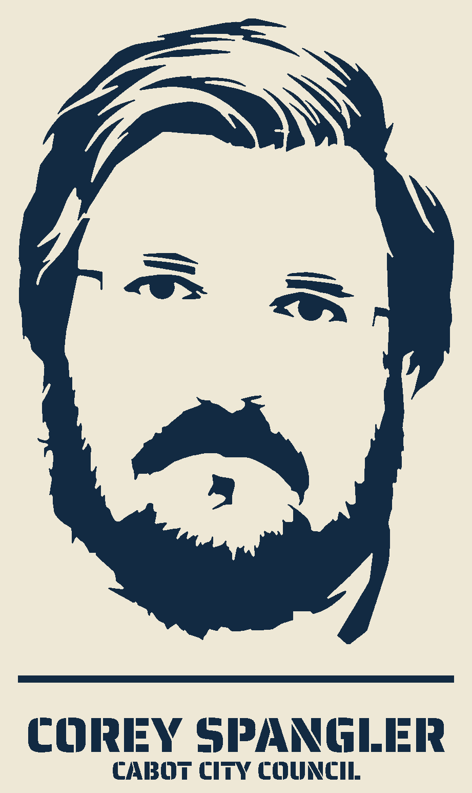
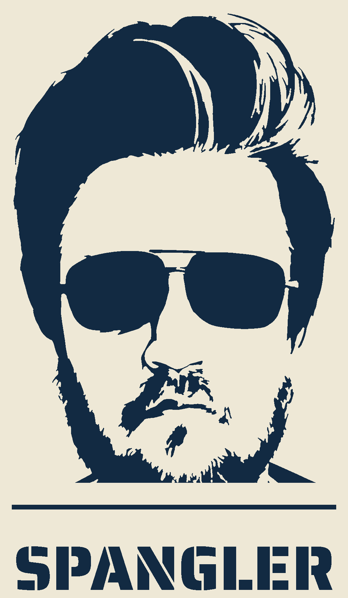
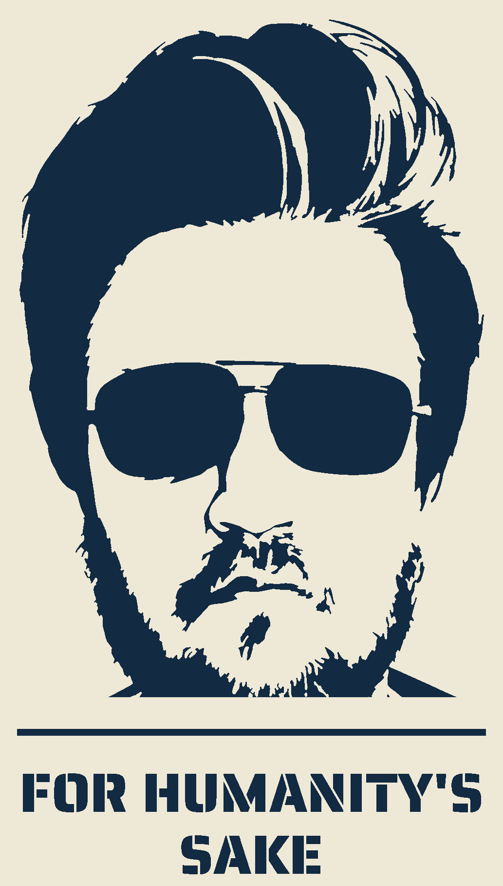
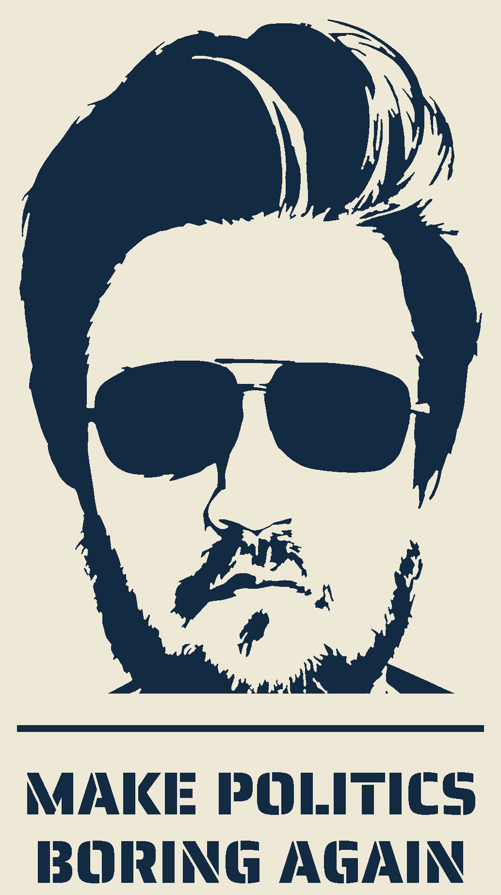
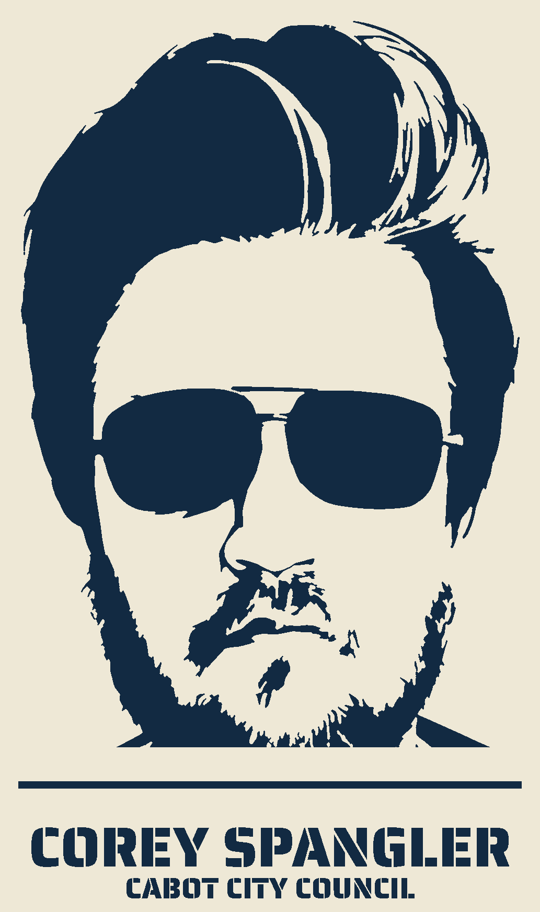

Stoic Opposition — Seal Emblem (flat seal, TIMIDI MATER NON FLET)
The flat seal is THE Stoic Opposition brand mark. Also on other product types in the shop.
NO CONSULTANTS • NO TRIBAL TEAM SPORTS • APPLIED CIVIC RECLAMATION
Doing the opposite of politics
Free Merch
Every design, as a free 3D-printable stencil plate. No shop, no markup, no permission slip.
The shirts in the shop exist to get the word out, not to make money — so the files that make them are free here. Download the STL, print the plate, spray-paint your own shirt, sign, tote, or garage wall. Fork the designs, remix them, hand them to a friend. If giving the files away spreads the message better than selling a shirt, giving them away is the point.
Free forever 25 stencil plates
1. Download the STL for the design you want (SVG and stencil PNG ride along if you'd rather cut or re-extrude it yourself).
2. Print the plate — they're 150 mm wide (the HOPE face is 170 mm), 1.6 mm thick, and island-checked so no pieces fall out. PETG flexes and survives wipe-downs; PLA works too. Scale X/Y in your slicer if your bed is smaller.
3. Spray — tape the plate down, light coats, lift it clean. That's the whole supply chain.
The free-use line, plain: free to print and use for personal, noncommercial shirts and signs. Fork them, remix them, share them.
The flat seal is THE Stoic Opposition brand mark. Also on other product types in the shop.

Stencil plate is the face; the shop art adds THE STOIC OPPOSITION lettering under it.

Stencil plate is the face; the shop art adds THE STOIC OPPOSITION lettering under it.

Stencil plate is the face; the shop art adds THE STOIC OPPOSITION lettering under it.

An ALPR/Flock-camera design for the Stoic Opposition, built Nov 16, 2026. Stoic Opposition only.

The original HOPE stencil. Optional second (red) layer: corey-stencil-layer2-red.svg / .png (no STL for layer 2).


Current v2 with full-size DJI Goggles 3. V1 is stencil-only below.




No product yet — print your own.
No product yet — print your own.

No product yet — print your own.

No product yet — print your own.
No product yet — print your own.

No product yet — print your own.

No product yet — print your own.

No product yet — print your own.

No product yet — print your own.

No product yet — print your own.

No product yet — print your own.

V1 kept for forking; v2 (full-size Goggles 3) is the current product design.